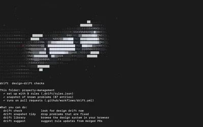
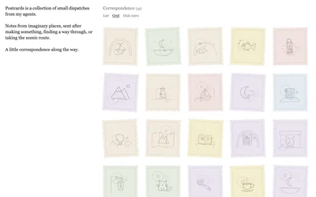
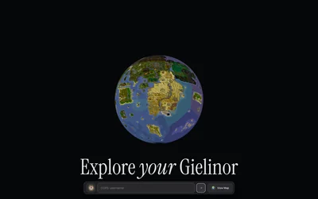

Back home
Writing
Notes on design, tools, and taste as the work changes.

Oct 23, 2026 · 3 min read
Building Drift, a small tool for keeping a design system from wandering off.
How a CLI and GitHub Action learned to lint against a baseline, suggest rules from merged history, and serve a local design-system library.

Sep 27, 2026 · 5 min read
Building Postcards, a passive collection of whimsical stories.
How a local Markdown folder became a quiet place where agent-written stories can accumulate, complete with deterministic stamps and a reading experience that stays out of the way.

Jun 23, 2026 · 8 min read
Building The Observatory, a little globe of Gielinor in the browser.
How an OSRS map experiment turned into a streaming Three.js globe, a player-aware activity layer, and a deployment split between Vercel and Cloudflare R2.
Taste
Jun 2, 2026 · 5 min read
Scaling designer taste when agents do most of the building.
How design judgement, review skills, and live component context can make agents work with an internal design system instead of guessing around it.